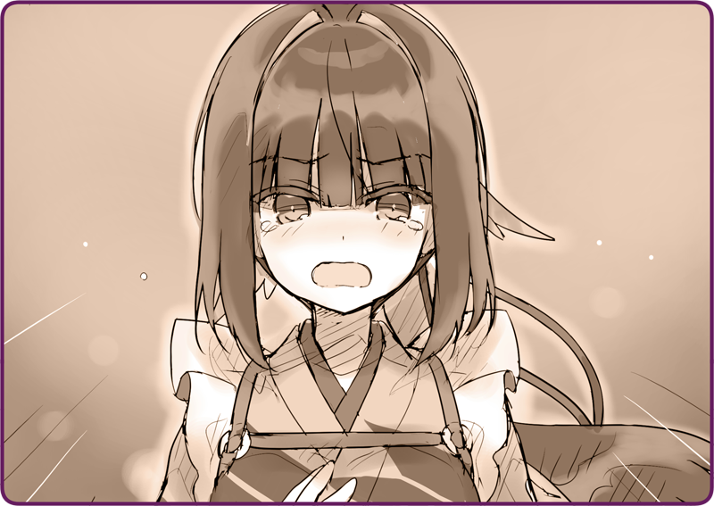

プリマドール・アンコール
06-11 雪華文様(11)
＜＜前のエピソード
目次
次のエピソード＞＞
「………ふぅ」
「………ふぅ」
深夜。邸宅の暖炉の前。
鴉羽はひとりピーナッツバターシェイクを飲みながら、義体を労っていた。
煙突から吹き上げる煙に、微かに黒いものが混じっているのが分かる。
危ないところだった。
あのまま追いかけっこをしても、遅からず追いつかれていただろう。一か八かの賭けだったが、うまくいってよかった。
機械人形
メカニカ
同士を巻き込んで、湖の外へと沈めた――人形は水に浮かない。大敵といってよかった。
鴉羽とローサは、なんとか氷結した湖の崩落に巻き込まれることなく、湖岸へと辿り着くことができた。
そのまま徒歩で森の中を抜けて、街へと帰ってきたのはとっぷり日が暮れてからだ。
ローサはかなり辛そうで、家に帰ると、へたり込んでしまう有様だった。
彼女の体調も気にかかるが、マスターに報告もしなければと、家族に預けて戻ってきたのだ。
「大丈夫……よね」
「大丈夫……よね」
マスターとおとめさんたちの行動は素早かった。
すぐに調査隊を組むと、現場へと向かっていた。
あれからもう随分経つ。もう日付も変わる時間だと思ったところで、自宅前に軍用車が止まるのがわかった。
「マスター、お疲れさまです」
「マスター、お疲れさまです」
毛布をもって出迎える。
ナギ「ああ、すまないね」
予想通り、コートは雪まみれだった。鼻先も真っ赤で、指先は氷のように冷たかった。
「いま、温かいお茶をお持ちします」
「いま、温かいお茶をお持ちします」
ナギ「よろしく頼むよ。ボクはすこし暖を取るとするよ……」
さすがに疲れた様子で、暖炉の前に丸まると、猫のように頬に手をこすりつけていた。
鴉羽がたっぷりと温めのお茶を用意すると、いかにもおいしそうにすすっていた。
ナギ「首尾よくいったよ……と言いたいところだけど、どうにもうまくいかなくてね」
「偵察人形は見つけられましたか？」
「偵察人形は見つけられましたか？」
ナギ「まだ湖の底さ。調べてみたが、いまはとても引き上げられない。専門の潜水士でも連れてこないとね」
「そう……ですよね」
「そう……ですよね」
農耕用人形も一緒に沈めてしまったので、すこし心が傷んだ。
ナギ「それで、キミが見た人形だが……」
「見つかりましたか？」
「見つかりましたか？」
ナギ「なんとか回収できた。いまはおとめちゃんが預かっている」
「あの人形は……もしかすると、桜花型ではありませんか？」
「あの人形は……もしかすると、桜花型ではありませんか？」
ナギ「………」
「一瞬でしたが、間違いありません。あれは……！」
「一瞬でしたが、間違いありません。あれは……！」
ナギ「あれは桜花じゃないよ」
「ですが……」
「ですが……」
ナギ「本国に残されていた試作機だよ。欠陥があるので起動しない。悪いやつもいるもんだ、そいつを手土産に亡命しようとした……バラして解析しようとでもしたんだろうね」
どこか寂しげな声色で、マスターは続けた。
ナギ「どうしてみんな、彼女たちをそっとしておいてやらないのかな」
「もしかして……マスターはそれを探していたんですか……？」
「もしかして……マスターはそれを探していたんですか……？」
こんな僻地を休養先に選んで、しばしばあてもなく外出していたことを思い出す。
ナギ「手がかりでも掴めればと思ったんだ。でも、まさかキミが見つけてくれるとはね」
「お礼は、ローサちゃんに言ってください……」
「お礼は、ローサちゃんに言ってください……」
疲れ切って、鴉羽の腕の中で眠ってしまった少女のことを思い出す。
ナギ「問題は、だ」
小さく息をつく。
ナギ「明朝まで船は出ないってことだ」
「それって……あ……」
「それって……あ……」
その言葉の意味に気付くのに、時間はかからなかった。
ナギ「ローベリアの偵察人形がいたということは、それを操る自律人形がいる。彼女を補佐する部隊も。たぶん沖合……軍船の報告はなかったから潜水艦かもしれない」
「……攻撃してくるということですか？」
「……攻撃してくるということですか？」
ナギ「こちらの準備が整っていないことに気付いていたら、そうするだろうね」
「そんな……」
「そんな……」
ナギ「住民を避難させよう。ここも片付けないと……準備が出来たら出よう」
＊ ＊ ＊
薄暗い室内で、鴉羽は荷物をまとめている。
といっても、持って行けるものは風呂敷ひとつだ。
マスターから預かった荷物を詰めていると、すぐに包みの中は一杯になった。
「これ……」
「これ……」
机の上、入りきらなかった荷物。
ローズヒップのジャム瓶だ。彼女はおいしいといって食べてくれた。この島で出来た……人間の友達。
そんな存在が出来るなんて、思いも寄らなかった。
ナギ「鴉羽、行こうか」
背嚢にありったけの荷物を詰め込んで、マスターがやってくる。
「あの、お願いがあります」
「あの、お願いがあります」
ジャム瓶を握りしめる。
ある決意と共に、鴉羽は声を上げた。
「あたしに命令をください。戦闘人形に……戻してください」
「あたしに命令をください。戦闘人形に……戻してください」
ナギ「なにを言うんだ？ キミはまだ直って……」
「直りました！
機械人形
メカニカ
を操って……撃退したんです。あたしは戦えます……！ いま、戦力はひとりでも多いほうが……！」
「直りました！
機械人形
メカニカ
を操って……撃退したんです。あたしは戦えます……！ いま、戦力はひとりでも多いほうが……！」
ナギ「……戦ってはいけないよ」
「それは命令ですか？」
「それは命令ですか？」
マスターは視線を伏せ、ただ静かに首を横に振った。

「あたしは、戦うために生まれたんです……！」
「あたしは、戦うために生まれたんです……！」
胸に手を当てて、マスターの元へと詰め寄った。
「そうでなければ、どうしてあたしを直したんですか……！？」
「そうでなければ、どうしてあたしを直したんですか……！？」
ナギ「……キミは、たったひとりでカザ要塞を守り通した。司令部が早々に壊滅……作戦命令を失ったのにも関わらず、だ」
「確かに正式な命令はありませんでした。ですが、自分の役目は明らかでした。あたしはそれに従ったまでです」
「確かに正式な命令はありませんでした。ですが、自分の役目は明らかでした。あたしはそれに従ったまでです」
ナギ「人形は普通、そんな考え方はしないんだよ。キミは他の人形とは違う」
「壊れていると言いたいのですか！？」
「壊れていると言いたいのですか！？」
ナギ「違う、違うんだ……ボクはそこに……希望を見た……だから、直したいと思った……誰に言われたわけでもない……ボク自身の意思で……」
「お願いします、マスター……！」
「お願いします、マスター……！」
懇願するように、すがりつくように声を上げた。
「あたしを戦わせてください……！」
「あたしを戦わせてください……！」
＜＜前のエピソード
次のエピソード＞＞
こちらのフォームよりご意見・ご感想をお寄せください
もれなくデジタルコンテンツをプレゼント！
執筆：丘野塔也 挿絵：まろやか ＣＶ：楠木ともり（鴉羽）
目次へ戻る
©VISUAL ARTS / Key
Bản dịch tiếng Việt thực hiện bởi Vietnam Key FanClub